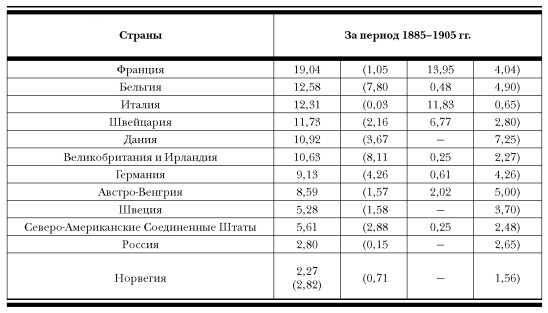
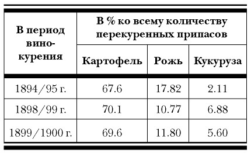

Причины исчезновения хлебного вина и замены его на современную водку

Основной, главной и, пожалуй, единственной причиной рождения водки явилось введение в России в конце ХIХ века государственной винной монополии. Реформирование питейной системы началось в 1894 году с четырех российских губерний — Оренбургской, Пермской, Самарской и Уфимской и завершилось в 1904 году распространением на Енисейскую и Иркутскую губернии и Забайкальскую и Якутскую области.[25]
Суть реформы заключалась в установлении контроля государства над продажей, ценами, количеством и качеством выпускаемой алкогольной продукции. При этом государство владело монополией исключительно на продажу спирта, вина (имеется в виду горячего вина) и водочных изделий (имеются в виду ароматизированные напитки). Производство всех этих изделий осуществлялось как на государственных, так и на частных предприятиях. Но поскольку их реализация шла исключительно через казенные заведения, государство могло устанавливать и устанавливало правила игры, обязательные для всех участников.
Истинной причиной введения винной монополии была необходимость создания прочной финансовой базы для выполнения амбициозных планов только что назначенного министром финансов молодого С. Ю. Витте. Но поскольку в условиях быстро развивающегося капитализма и роста рыночных отношений любые мероприятия по ограничению свободы предпринимательства были крайне непопулярны, то откровенно фискальные цели реформы необходимо было замаскировать заботой о здоровье и благополучии граждан. Поэтому основными причинами, побуждающими государство ввести винную монополию, указывались, во-первых, забота о качестве алкогольной продукции, как тогда называли — питей, а во-вторых, отсутствие культуры потребления и отсюда массовое пьянство населения.
И та, и другая причины при беспристрастном рассмотрении критики не выдерживают.
Что касается качества, то во всех странах и во все времена (как и сейчас) легально производимая продукция отличалась весьма широким ассортиментом, в спектре которого были высококачественные элитные напитки, а также — откровенное пойло. Не говоря уже о нелегальной продукции. И Россия, естественно, не была исключением. Но как показывает мировой опыт, качество потребляемой населением продукции определяется способностью государства эффективно контролировать соблюдение принятых стандартов и способностью его силовых органов пресекать нелегальное, а тем более криминальное производство. И введение государственной монополии для этого совершенно не обязательно (с этой проблемой сталкивались все без исключения государства, но монополия всерьез и надолго введена была только в России).
Тем более что именно в этот период в России происходил объективный процесс повышения качества легальной продукции. С одной стороны, он был обусловлен все возраставшей в условиях свободного рынка конкуренцией многочисленных производителей между собой, заставлявшей заводчиков переоснащать производство. А с другой стороны, к этому времени было создано и промышленно выпускалось оборудование, применение которого автоматически обеспечивало необходимое качество. Об уровне российской алкогольной промышленности говорят многочисленные награды, регулярно получаемые производителями на отечественных и зарубежных выставках. Так, в частности, на Всемирной Колумбовой выставке в Чикаго было представлено более 600 экспонатов, произведших буквально фурор среди знатоков. А фирма П. А. Смирнова получила на этой выставке большую золотую медаль.[26]
Что же касается второй причины — постоянно растущее потребление алкоголя и деградация в связи с этим определенных слоев населения, то и она при ближайшем рассмотрении оказывается надуманной. Как показывают исследования серьезных ученых (в отличие от популистских работ, выполняемых по заказу), уровень потребления алкоголя не зависит ни от количества, ни от качества, ни от цены легально производимого алкоголя, а определяется исключительно социальными причинами. В России в то время рост потребления алкоголя происходил за счет «раскрестьянивания». Крестьяне в массе своей никогда не были пьяницами. А причина «раскрестьянивания» заключалась в развитии капитализма, индустриализации экономики, росте городов, особенно крупных промышленных центров. И как следствие — огромное увеличение городского населения (за счет земледельческого), рост фабрично-заводского пролетариата.[27] Отсюда рост потребления алкоголя, и никакая винная монополия повлиять на это не могла. Существуют и другие теории, объясняющие рост потребления алкоголя в России.[28] В любом случае с введением питейной монополии этот рост не только не замедлился, но, наоборот, увеличился.[18,20] К тому же рассказы о поголовном российском пьянстве при ближайшем рассмотрении оказываются очередным мифом. Посмотрим на таблицу.
Первая цифра вне скобок показывает общую сумму потребляемого алкоголя (в литрах безводного спирта); цифры в скобках: первая — количество алкоголя (абсолютного), потребляемого в пиве; вторая — количество алкоголя (абсолютного) в вине (виноградном); третья — количество алкоголя (абсолютного) в крепких (40 %) напитках.[30]

Из приведенных данных следует, что по потреблению абсолютного алкоголя Россия была в мире на предпоследнем месте. Но считается, что сравнение по абсолютному алкоголю не всегда корректно, так как даже гораздо большее его потребление, но в вине или других слабоградусных напитках (южный тип потребления), приносит намного меньший вред, чем «залповое» потребление крепких напитков (северный тип потребления). Поэтому обратимся к последней колонке. Из нее видно, что и в этом случае (потребление именно крепких напитков) Россия находится лишь на восьмом месте, отставая от лидера — Дании — в 2,7 раза.
Итак, мы еще раз констатируем, что истинной причиной введения винной монополии была забота о пополнении бюджета.[31] Но запущенная пропагандистская машина требовала конкретных мероприятий по повышению качества выпускаемой продукции. А чем было плохо хлебное вино, производимое на частных заводах? Оказывается, повышенным содержанием вредных примесей, к числу которых в первую очередь относили эфиры и сивушное масло, то есть те самые компоненты, которые в избытке присутствуют в знаменитых коньяках и виски, и именно они придают этим напиткам их неповторимый вкус и аромат.
Русское хлебное вино в то время по своему химическому составу и органолептическим свойствам стояло в общем ряду лучших мировых напитков-дистиллятов. Я твердо в этом уверен, так как, в отличие от многочисленных авторов-теоретиков, воспроизвел технологию изготовления хлебного вина и на практике убедился в его великолепном качестве. При этом, заметьте, хлебное вино и тогда, и тем более сейчас не имело в мире аналогов и представляло собой действительно русский национальный напиток, традиции изготовления которого основывались на многовековом опыте российского винокурения.
Но в процессе подготовки общественного мнения к необходимости введения винной монополии упор был сделан на недостаточную чистоту производимых напитков, в первую очередь хлебного вина как базовой составляющей всей алкогольной отрасли. С целью борьбы за качество (причем за «качество», понимаемое исключительно как «минимизация вредностей») были созданы специальные комиссии, организованы многочисленные лаборатории, по существу образована целая инфраструктура, которая, согласно законам жанра, выполнив на первом этапе положительную роль, затем начинает работать сама на себя, оправдывая свое существование. В результате процесс пошел по самому худшему сценарию. Наиболее простым способом контроля над содержанием примесей является их (примесей) полное удаление. По этому пути и пошли. Винокуренные заводы ставились в такие условия, что производить неректификованный спирт было просто невыгодно и приходилось срочно обзаводиться ректификационными установками. Тем более что технический прогресс к тому времени обеспечил промышленность весьма совершенными ректификационными аппаратами, позволяющими с большой эффективностью (как технической, так и экономической) получать спирт с крепостью более 95 %. Немаловажную, если не решающую роль при этом играл дополнительный фактор снижения себестоимости. Действительно, что может быть дешевле бесхитростно разведенного спирта? Всякое пропускание через уголь и многочисленные фильтры дают лишь небольшой вклад в себестоимость, определяемую в этом случае исключительно ценой сырья.[32] И здесь спирт крепостью более 95 градусов оказался незаменимым, так как при этом практически невозможно отличить спирт, сделанный из зерна, от спирта, сделанного из картофеля, сахарной свеклы, мелассы и другого крахмалосодержащего сырья. А следовательно, вместо ценных ржи и пшеницы можно спокойно использовать дешевое сырье, тем самым снижая себестоимость продукции. В условиях честной рыночной конкуренции снижение себестоимости привело бы к снижению продажной цены, но в условиях монополии это приводило только к повышению доходов государства.
Приведенная ниже таблица ясно показывает, из какого сырья изготавливалось вино в России в 90-е годы XIX века.[33]

Это не значит, что в дореформенный период вырисовывалась уж совсем благостная картина, но в условиях жесткой конкуренции картофельное сырье применялось лишь в крайнем случае, особенно в исторически зерновых районах России.[18,22]
Новейшее техническое оснащение заводов (винных складов), специально построенных для нужд монополии, позволило правительству в 1895 году принять, как бы сейчас сказали, нормативный акт об изготовлении «монопольного вина» только из ректификованного спирта с обязательной обработкой углем.[35] Именно этот год — 1895-й, год появления первого «стандарта» на «монопольное вино», и следует считать годом рождения водки, так как именно этот продукт впервые представил собой смесь ректификованного 95 %-ного спирта с водой, и крепость для него была установлена 40 %. Вот она первая водка! Правда, тогда она еще «водкой» не называлась. На этикетке писалось «Казенное вино». Если же применялся спирт двойной ректификации, то полученный напиток назывался «Казенное столовое вино».
Таким образом, хлебное вино, сутью которого веками являлись вкус и аромат исходного сырья (в основном ржи) со всеми присущими данному сырью и неотъемлемыми от готового продукта примесями (в том числе и пресловутым сивушным маслом), превратилось в простой водно-спиртовой раствор, то есть в то, что мы пьем сейчас и считаем русским национальным напитком.
А настоящее хлебное вино для народа было потеряно и до сих пор остается неизвестным. Более того, абсолютное большинство населения уверено, что хлебным вином раньше называлась их любимая водка. А как могла она не стать любимой, если не было никакой альтернативы, причем на протяжении уже многих поколений? Нельзя же всерьез считать альтернативой чуждые российскому менталитету коньяк и совсем недавно появившийся на прилавках весьма дорогой виски.
Итак, своему появлению и затем исключительно монопольному положению водка обязана введением в России государственной винной монополии. В итоге господствующее положение водка заняла не в результате честной конкурентной борьбы, а благодаря «водочной революции», поставившей вне закона старые технологии и утвердившей «диктатуру ректификации».